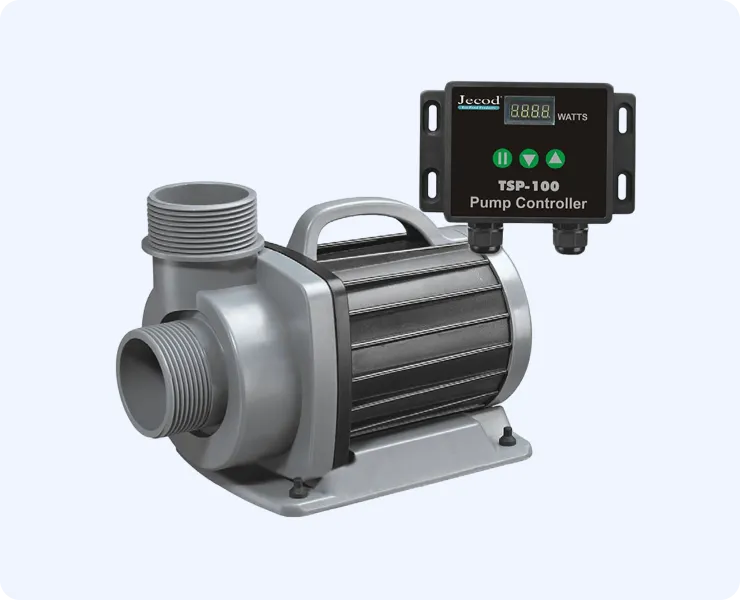

Насосы для пруда
Насос прудовый TSP-10000, 10000 л/час, 85 Вт, макс. напор 5м
Цена и наличие
- 1 шт.740 BYN / шт.В наличии
Данные на 23.11.2026.
Характеристики
- Тип насоса
- прудовый
- Мощность
- 85 Вт
- Производительность
- 10000 л/час
- Напор
- 5 м
- Особенности
- с электронной регулировкой мощности
- Питание
- 220 V
- Страна производитель, бренд
- Jebao, Китай
Описание
Насос серии TSP Jebao предназначен для подачи воды на каскад, ручей, фильтрацию и просто циркуляцию Вашего водоема.
Насос для пруда Jebao TSP-10000, 10000л/ч, 5 м напор, 85 вт, 220 В, с электронной регулировкой мощности Насос TSP-10000 – насос серии TSP Jebao предназначен для подачи воды на каскад, ручей, фильтрацию и просто циркуляцию Вашего водоема. Данный насос может устанавливаться как в водоеме, так и за пределами его (сухая установка). Особенности данной модели в том, что в комплект входит устройство способное, при вашем участии, повышать или понижать мощность насоса, соответственно и количество подаваемой воды на каскад, ручей и т.д. Очень удобно при эксплуатации. Устанавливается очень просто – ставится насос (либо в водоем, либо рядом с ним), от насоса идет кабель, который подключается к блоку управления мощностью, затем из блока выходит кабель для подключения в розетку.Если глубина водоема 1.3 м и более, то насос можно оставить на глубине в зимний период. Энергосберегающий насос для пруда Jebao TSP оснащенный контроллером с LED дисплеем. Имеет возможность дистанционного включения/выключения, настройки мощности насоса.
Преимущества
Внешний контроллер управления мощностью с дисплеем; Энергоэкономичный (сохранение до 65% электроэнергии); Очень низкий уровень шума (тихий в работе); Защита двигателя при блокировке ротора; Автоматическое выключение при отсутствии воды; Отсутствие медных компонентов; Износостойкий керамический вал.